This is a direct argument against betting agent infrastructure on the web exposing APIs or MCP servers everywhere: most of the web (restaurant menus, school district procurement pages, small business sites) is scanned PDFs, JPEG gallerie...
This traces Batra's argument from the agentify-not-API-ify thesis through the long-tail evidence to the current cost and accuracy numbers he cites; it compresses a 21-minute talk into one flow (ours).
“computer use agents and computer use models will identify the web not APIs and more specifically the long tail of the web”
said at 01:34“I am looking at JPEGs embedded in a gallery which contain the PDF items”
said at 04:40“the active websites are somewhere 200 million. the total number of websites are sitting in a in a billion infrastructure changes very slowly”
said at 07:48“There's an empty placeholder initially and you wait a few hundred milliseconds to a few seconds depending on your network connection and your browser makes an asynchronous call later to fetch the information”
said at 09:23“Fundamentally the web was built for human eyes. Pixels are the source of the truth because the consumers of the websites are humans. That is what it was built for”
said at 11:57“navigator N 1.5 is sitting at 97% human eval eight trajectories out of 300 are incorrect at this point of time you should just retire the benchmark build something harder”
said at 16:37“you're looking at 80 cents per task versus $230”
said at 18:11“Accuracies are getting higher, benchmarks are falling, latencies are getting smaller, costs are falling. And that trend I think will continue”
said at 19:47The wager here is specific: don't build product plumbing around an assumption of universal API/MCP coverage for third-party sites you don't control, especially small institutional ones. The counterargument not addressed in the talk is whether sites will actively adversarially block computer-use traffic once it's common at scale. (ours)
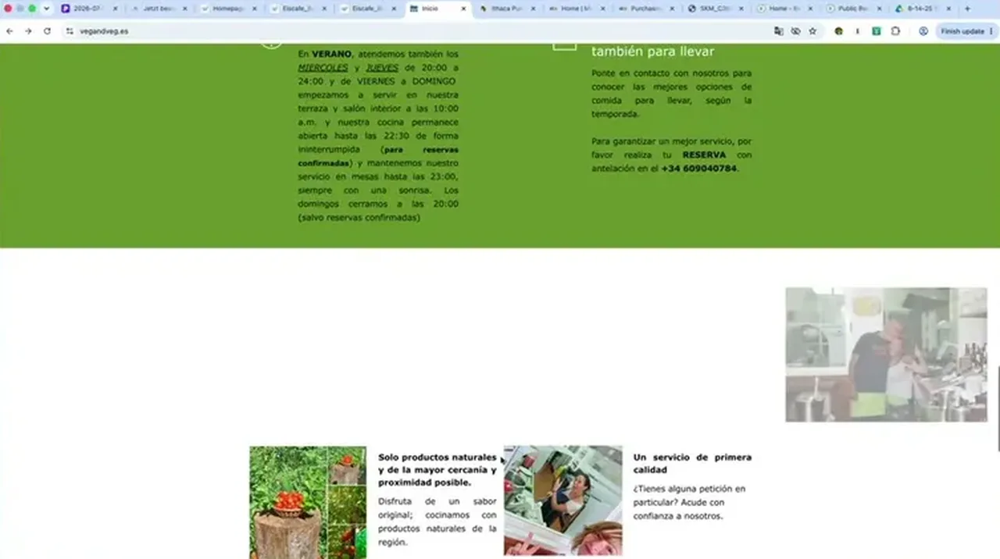
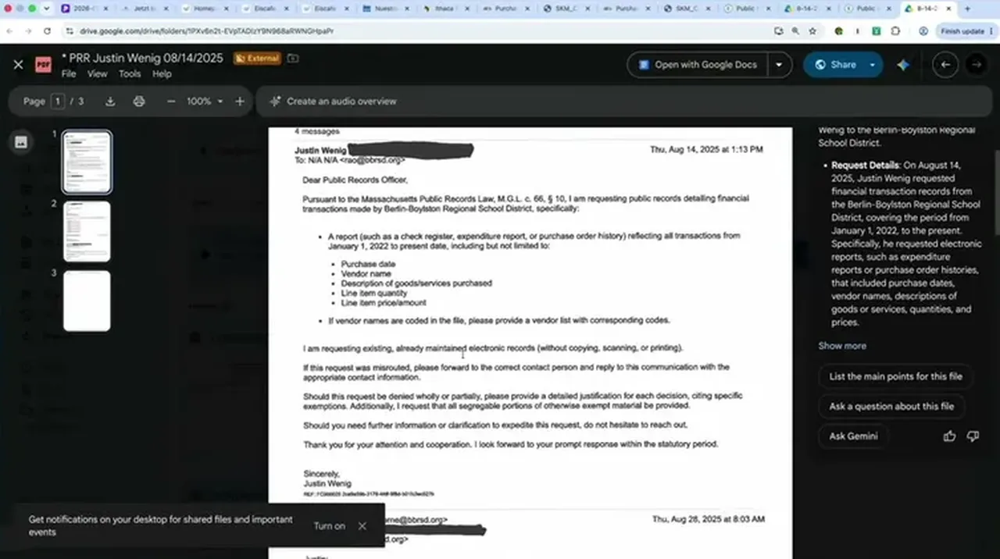
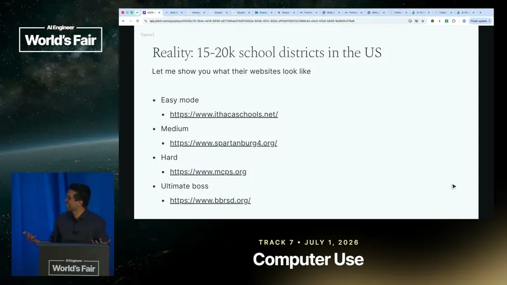
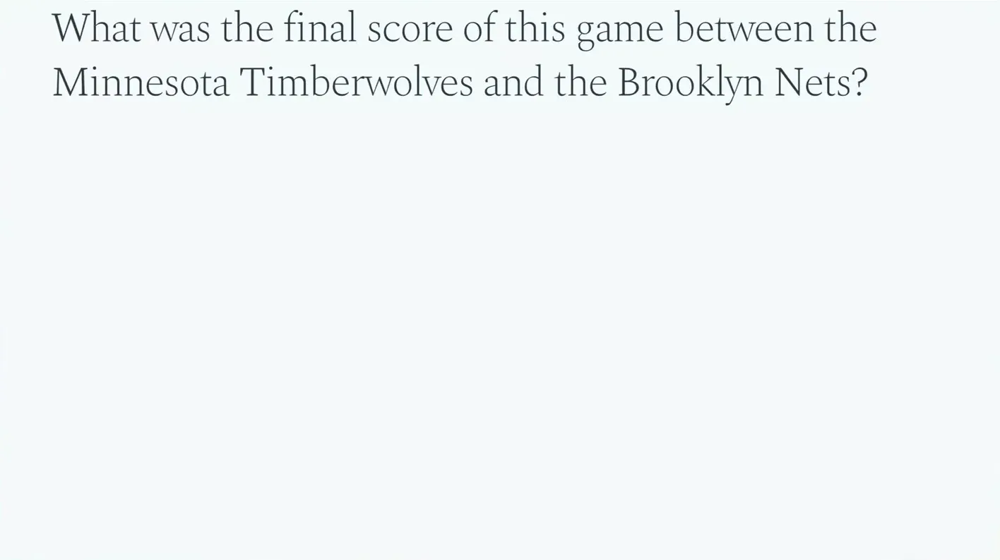
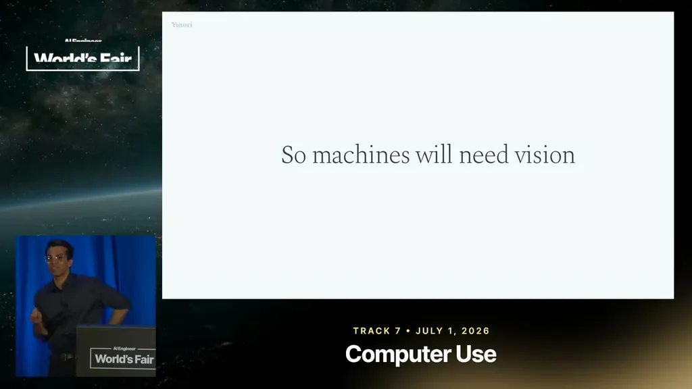
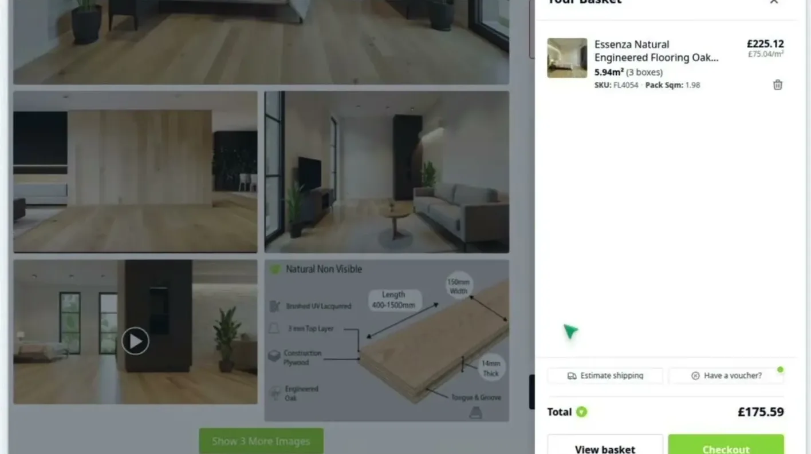
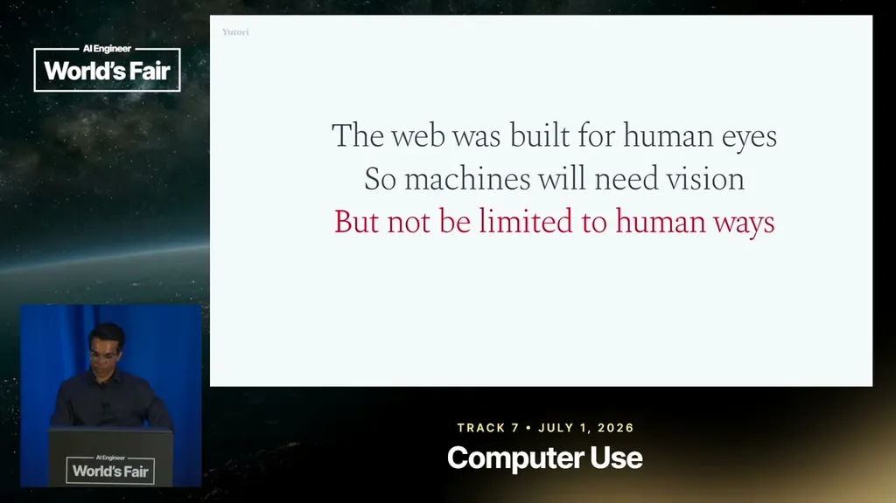
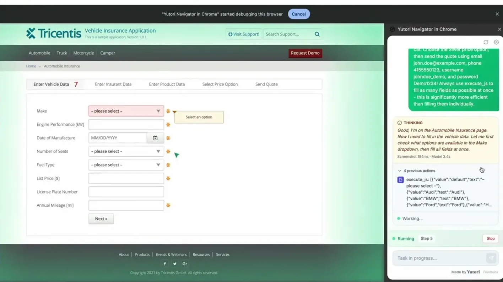
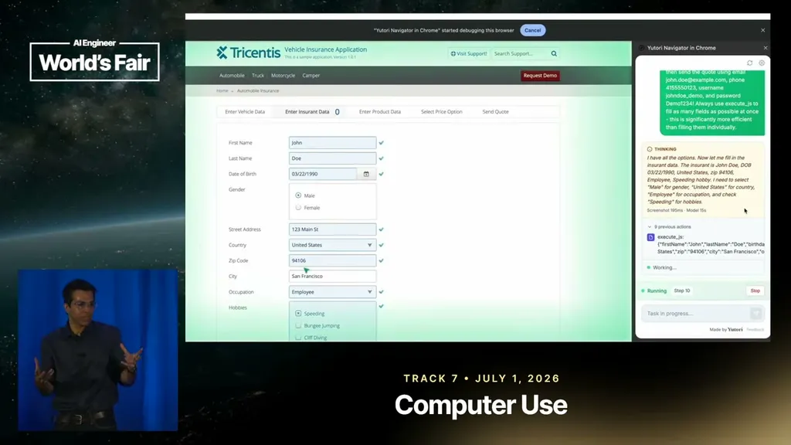
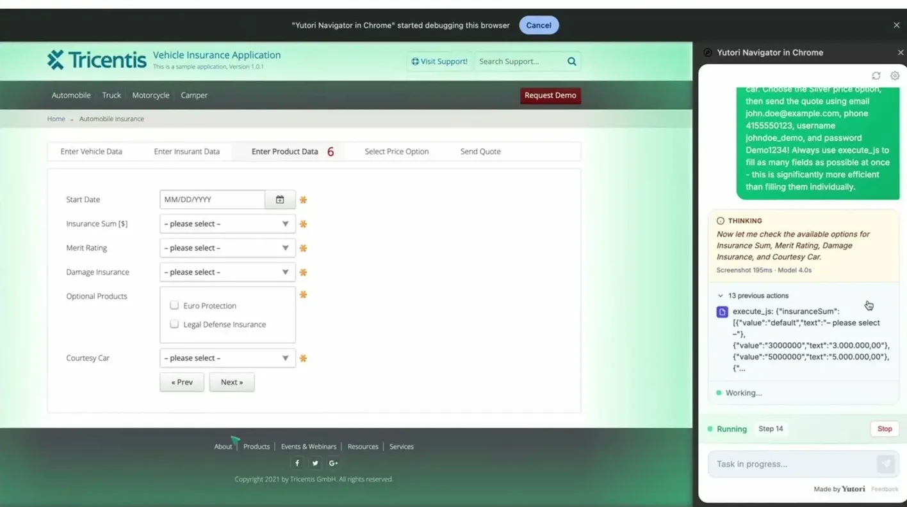
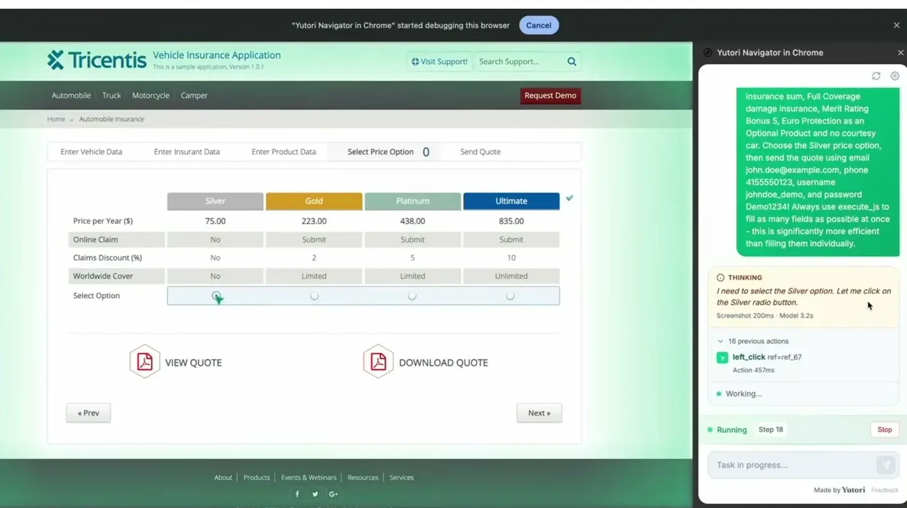
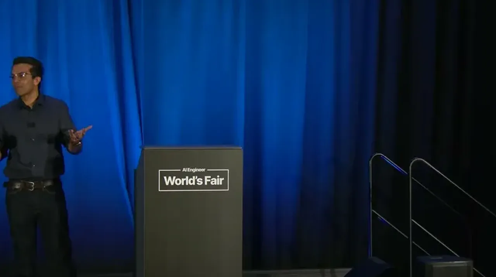
| Stance | Claim | t |
|---|---|---|
| predicts | Computer-use agents and models, not APIs, will make the web machine-accessible, especially the long tail of sites beyond the most popular ones. | 01:34 |
| asserts | Many long-tail sites (example: restaurant menus) present information only as scanned PDFs embedded as JPEGs in an image gallery, with no extractable text. | 04:40 |
| asserts | There are roughly 200 million active websites sitting on infrastructure in the billions that changes very slowly. | 07:48 |
| asserts | Modern sites often load an empty placeholder first and fetch the real content asynchronously as JSON, so the answer isn't present in the initial HTML a scraper would read. | 09:23 |
| asserts | The web was built for human eyes, so pixels are the true source of information, and machine agents will need vision to operate it, not HTML parsing. | 11:57 |
| asserts | Navigator N1.5 scores 97% human-eval on Online Mind2Web with only 8 of 300 trajectories incorrect, meaning the benchmark is saturated and should be retired for something harder. | 16:37 |
| asserts | A 20-30 step browser task costs about 80 cents with Yutori's smaller model versus a much higher figure with larger frontier-model agents (spoken/transcribed as '$230', likely meaning roughly $2 to $30). | 18:11 |
| predicts | Accuracy, latency, and cost trends for computer-use models will continue improving, eventually making the distinction from an API irrelevant. | 19:47 |
Machine-readable copy embedded in this page (script#ontology) and in the corpus ontology.